AccruPay · Payments orchestration
Leading a payments startup from first brief to launch.
I led the repositioning of AccruPay, then directed its brand, website, design system and developer-facing experience from first brief to launch.
The result: a developer-first payment router that keeps revenue flowing when a provider fails.
I led. Positioning and product story · brand identity · website and product UI direction · design system · developer experience.
Outcome. 0 → launch · live with Wondercare, a cross-border insurer.
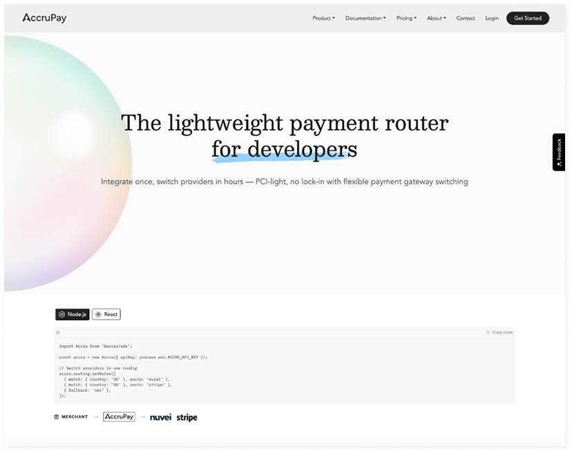
Confidentiality · AccruPay is publicly named. This version includes early discovery, brand explorations, internal design artefacts and detailed website journeys shared for portfolio review.
- 01 Mandate & discoveryThe original proposition and five-step review →
- 02 LeadershipThe decision, trade-off and team →
- 03 Brand identityExploration, shortlist and testing →
- 04 Website & journeysTen templates and desktop journey →
- 05 Page designDesigning for two readers →
- 06 Design systemTokens, type and components →
- 07 Outcomes0 → launch and customer proof →
- 08 ReflectionWhat changed and what I would do differently →
A payments product with the wrong story.
AccruPay began as a smart payments toolkit for small businesses, with an illustrated brand and a long feature list. Underneath was a sharper idea: resilience and provider independence. My first job was to find it and make it the product.
Sell a smart toolkit to small businesses
The brief was to market a list of payment features, such as dual pricing, surcharging and invoicing, to small retailers.
Features any processor could claim
The list blended in with every competitor. The product's real strength, routing across providers, was buried at the bottom and aimed at the wrong buyer.
Reposition as infrastructure for developers
Lead with resilience and provider independence, sell to technical teams, and rebuild the brand, site and product around one idea: when a provider fails, your revenue doesn't.
Empowering small businesses with smart payment solutions
A list of features for small businesses, with an illustrated, friendly brand. Hard to tell apart from every other payments toolkit.
A lightweight payment router for developers
One sharp idea: when a provider fails, your revenue doesn't.
Where it started
What I inherited in discovery, and what each piece told me. Select a step.
Accru Pay: Empowering Small Businesses with Smart Payment Solutions
“A transparent and efficient payment platform designed specifically for small businesses.”
I directed every surface a customer would touch.
I led the positioning, brand and experience direction, working with founders, agency collaborators and engineering from first brief to launch.
Product vision, commercial model and investor relationships.
- Positioning and product story
- Brand identity
- Website and product UI
- Design system and devex
Routing engine, SDK, sandbox and API, built to the journeys we defined.
Demos, early customers and fundraising, all using the new story.
Reframing the product
Found the stronger story in the brief: resilience and provider independence, not more features.
Building the brand
Led identity from exploration to an approved mark, type and colour system.
Directing web and product
Defined the sitemap, journeys and page system from homepage to sandbox.
Designing for developers
Shaped the SDK, sandbox and docs experience with engineering.
Choose a sharper buyer, not a longer feature list.
The trade-off. Leading with a lightweight router for developers meant stepping away from broad small-business marketing and giving less prominence to invoicing, surcharging and payment-plan features.
Building alignment. I made the case through a before-and-after proposition and connected it to the website, SDK story and sandbox journey so the founders could evaluate one coherent direction. The resulting positioning gave design and engineering a shared narrative.
From exploration to an approved mark.
A structured process so the founders could choose with confidence.
Broad exploration of marks around routing, switching and the letter A.
Five directions drawn on a consistent grid for a fair comparison.
Each mark shown on light, dark, point of sale and mobile.
The chosen mark became the base for type, colour and components.
The rounds
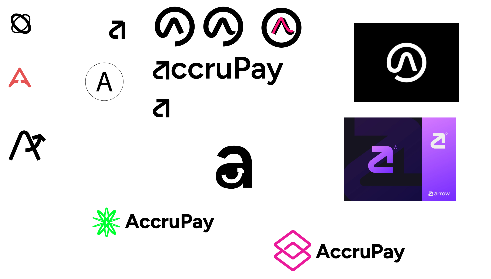
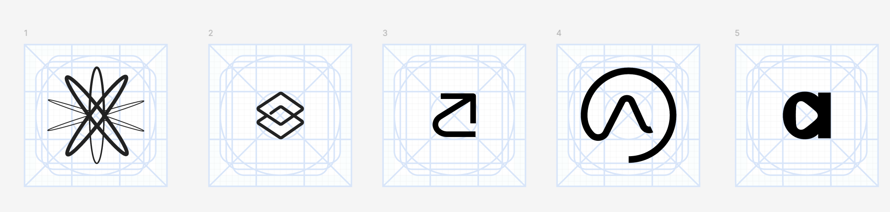
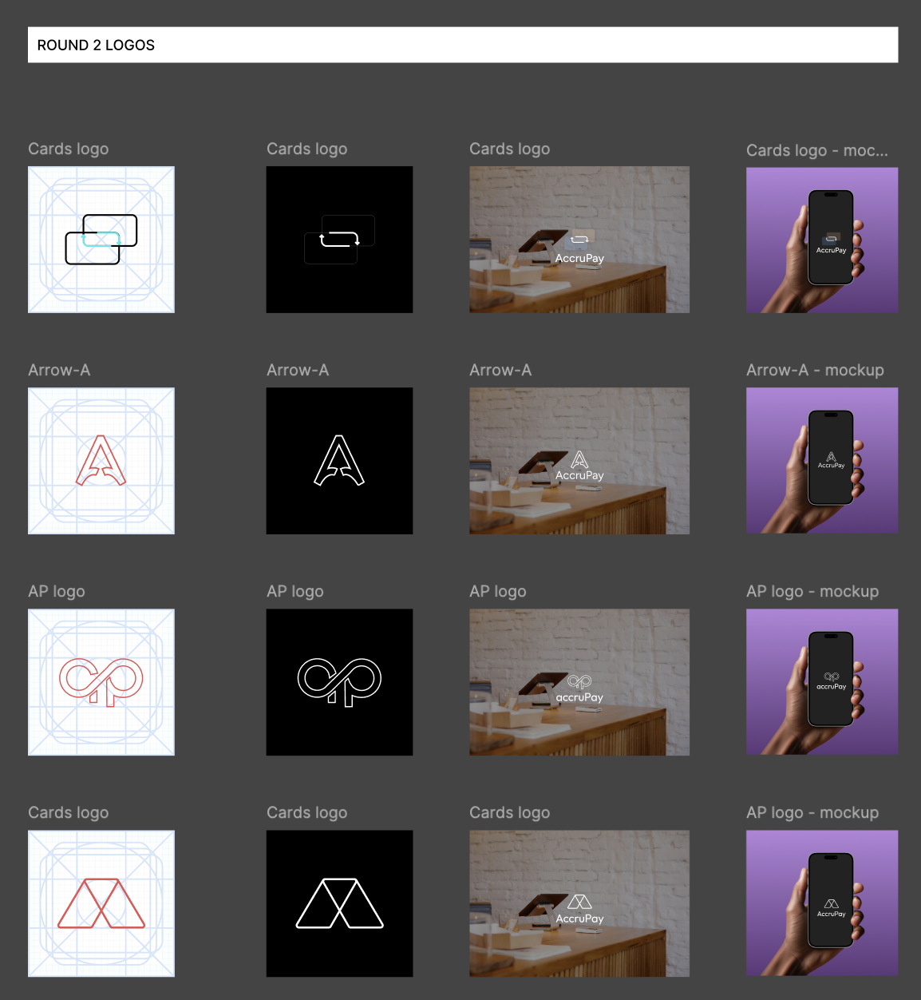
Ten templates, one end-to-end journey.
The sitemap and the full desktop journey, from homepage through sandbox access to contact.
The desktop journey
Step through each page in the end-to-end flow.
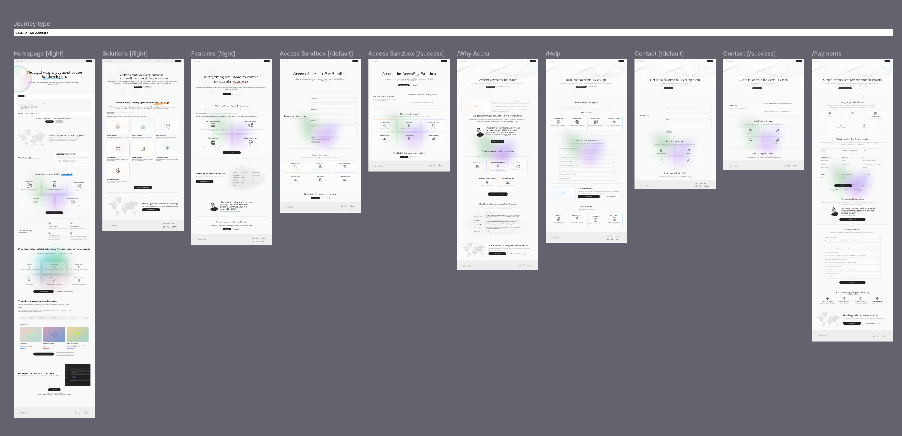
A site that carries both readers.
Developers and operators get their answer on the same page.
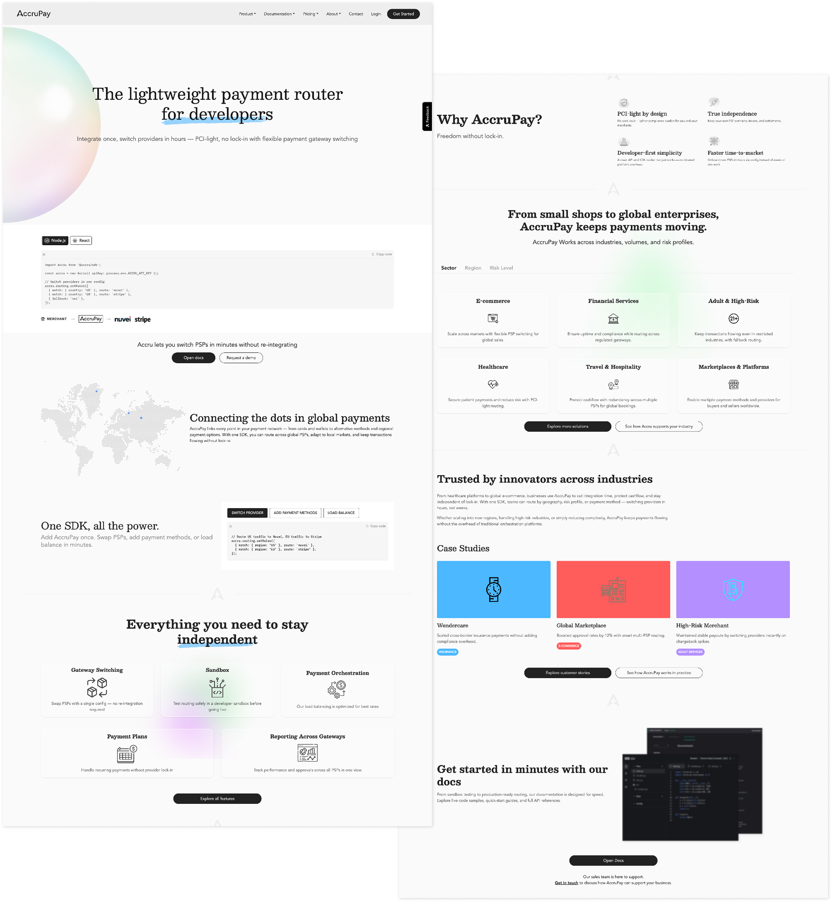
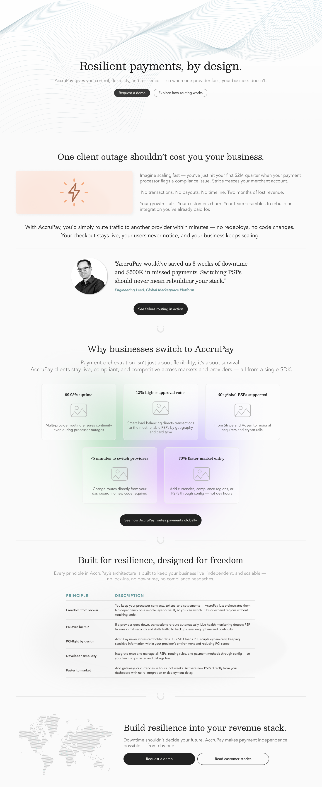
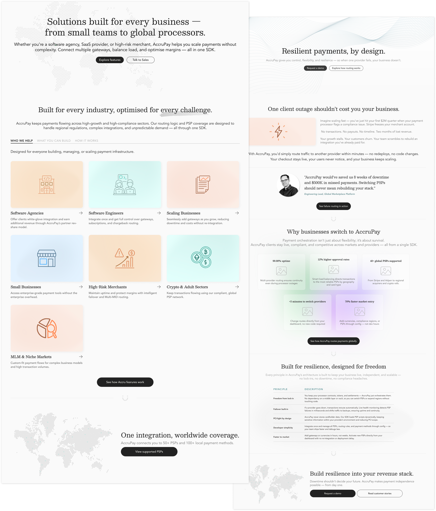
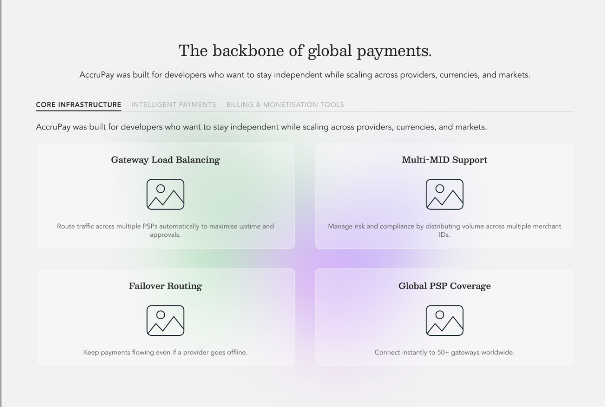
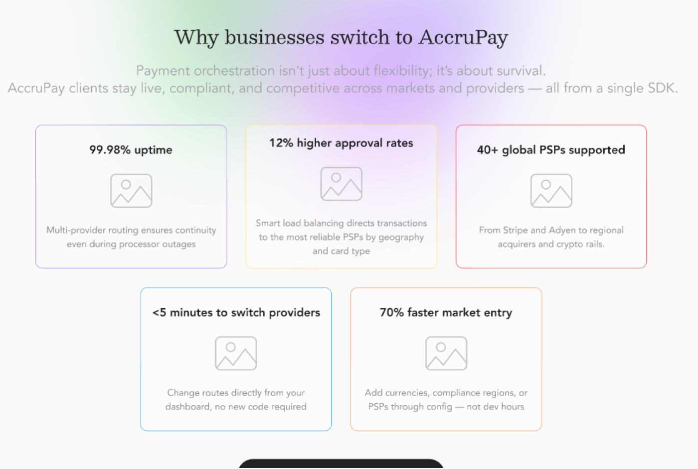
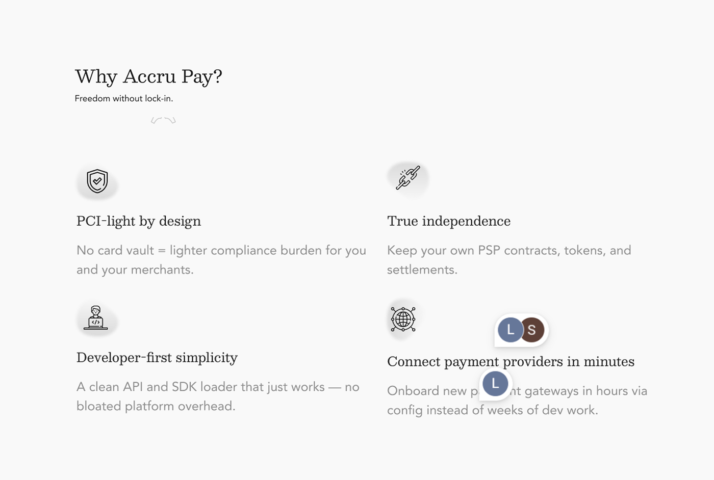
Sandbox · route, fail, recover
The routing logic the site had to explain. Toggle a provider outage and send a payment.
Two readers, one page
Designed for two readers at once
The developer who has to integrate it, and the operator who has to trust it. Each section carries a commercial layer and a technical layer, so both find their answer without a second page.
One SDK, all the power.
Add AccruPay once. Swap providers, add payment methods or load balance in minutes.
{ match: { region: 'EU' }, route: 'provider-c' },
{ fallback: 'provider-b' }
]);
One outage shouldn't cost you your business.
Route traffic to another provider within minutes. No redeploys, no code changes.
Tokens that carry from site to product.
Colour styles generated in the Figma UI kit, with type and components shared across web and product.
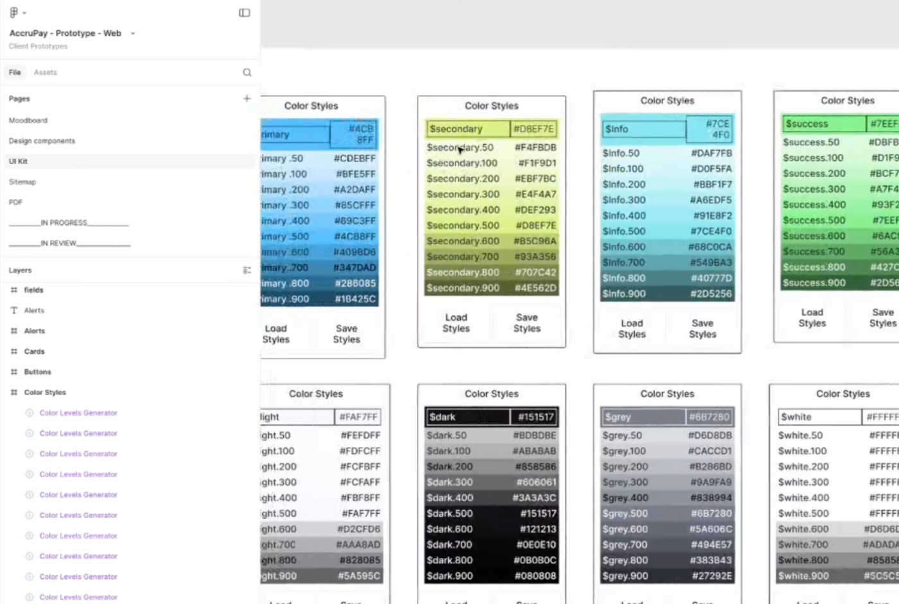
Scales and type
My role, plus the team, equals the outcome.
The product was built by a small team. My contribution was the story, the brand and the experience system that made it credible at launch.
- Positioning and product story
- Brand identity
- Website and product UI direction
- Design system and developer experience
- Founders: vision and funding
- Engineering: SDK, sandbox, APIs
- Content and documentation
- Sales and early customers
- Agency collaborators: creative delivery
Live with Wondercare, a cross-border insurer. The outcome reflects work by founders, engineering, agency collaborators and design; it is not attributable to design alone.
What this taught me.
- 01 The strongest positioning came from identifying what the original feature list concealed: resilience and independence.
- 02 The website needed to serve two different decisions: whether to integrate, and whether to trust the product commercially.
- 03 Shared templates and tokens created consistency across the site, sandbox and product direction without making each page identical.
- 04 A focused proposition made it easier to align the brand, website and developer journey around one promise.
- 05 What I would do differently: validate the developer-first story with target users earlier, before expanding the full page system.
Design that means business.
From positioning to product, I help teams turn complex ideas into clear digital experiences.